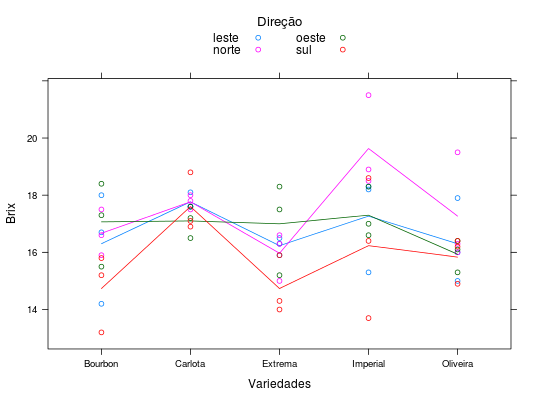

Experimento que mediu o grau brix de frutos de 5 variedades de mangueira, colhidos de 3 pés por variedade. De cada pé foram coletados 4 frutos, um em cada lado da planta voltado para os pontos cardeais (N, S, L e O). Este ensaio pode ser considerado como em parcelas subdivididas, sendo cada parcela uma mangueira, e as subparcelas são as 4 faces de cada árvore, correspondentes aos 4 pontos cardeais.
Um data.frame com 60 observações e 3 variáveis, em que
direcaovariedbrixPIMENTEL-GOMES (2009), Tabela 9.4.1, pág. 175.
library(lattice) data(PimentelTb9.4.1)#> Warning: data set ‘PimentelTb9.4.1’ not foundstr(PimentelTb9.4.1)#> 'data.frame': 60 obs. of 3 variables: #> $ direcao: Factor w/ 4 levels "leste","norte",..: 2 2 2 2 2 2 2 2 2 2 ... #> $ varied : Factor w/ 5 levels "Bourbon","Carlota",..: 2 2 2 3 3 3 5 5 5 1 ... #> $ brix : num 18 17.5 17.8 16.3 16.6 15 16 19.5 16.3 16.6 ...xyplot(brix ~ varied, groups = direcao, type = c("p", "a"), data = PimentelTb9.4.1, xlab = "Variedades", ylab = "Brix", auto.key = list(title = "Direção", cex.title = 1.1, columns = 2))